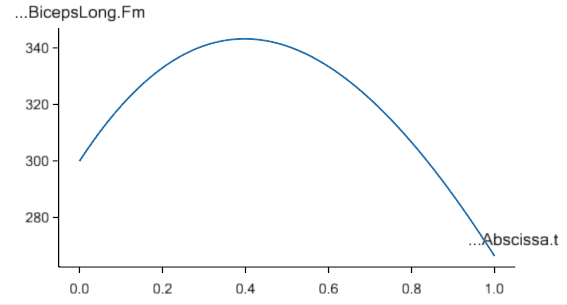

Lesson 5: Definition of Muscles and External Forces#
Note
Here’s an AnyScript file to start on if you have not completed the
previous lesson: demo.lesson5.any.
The model so far has been capable of motion despite lacking muscles. This is because a kinematic analysis that does not consider forces.
Skeletal muscles produce movement by pulling on our bones. Muscle actions are coordinated in complicated patterns determined by our central nervous system.
AnyBody helps you predict realistic muscle activation patterns for a given movement and external load.
Creating a muscle model#
The exact behaviour of muscle tissue is a widely researched (and debated) topic.
AnyBody offers several models of varying sophistication, for modelling muscle behaviour. A detailed introduction to muscle modeling can be found here its own tutorial.
Here, we will create a very simple muscle model and use it to model our arm model muscles. We start by creating a folder for the muscles:
AnyFolder Muscles = {
}; // Muscles folder
The next step is to create a muscle model that defines the properties that will be assumed common for all the muscles.
Note
Since properties such as Max muscle strength, fiber length etc. differ between muscles, realistic AMMR human body models define unique muscle models for each muscle element.
AnyFolder Muscles = {
// Simple muscle model with constant strength = 400 Newton
AnyMuscleModel MusMdl = {
F0 = 400;
};
}; // Muscles folder
Creating a muscle#
Since muscles can only pull, we need to define at least one muscle on each side of every revolute joint.
When working with models containing three-dimensional spherical joints, you may need more muscles. It can be quite difficult to figure out the minimum number of muscles required to drive a complex body model.
Let’s add just one muscle to start with, the elbow-flexor muscle named Brachialis:
AnyFolder Muscles = {
// Simple muscle model with constant strength = 300 Newton
AnyMuscleModel MusMdl = {
F0 = 400;
};
//---------------------------------
AnyMuscleViaPoint Brachialis = {
AnyMuscleModel &MusMdl = ..Muscles.MusMdl;
AnyRefNode &Org = ..Segs.UpperArm.Brachialis;
AnyRefNode &Ins = ..Segs.ForeArm.Brachialis;
AnyDrawMuscle DrwMus = {};
};
}; // Muscles folder
This muscle is created by the AnyMuscleViaPoint class. These are muscles which begin at
an origin point, pass through a number of pre-defined via points, and finally terminate
at the insertion.
Org and Ins are the origin and insertion of the Brachialis. They are reference objects,
pointing to reference nodes named “Brachialis” that have already been created on the “UpperArm” and “ForeArm”
The Brachialis muscle in our model lacks via-points. However if a muscle has via points, we must insert
reference objects to respective via-point nodes in the lines between Org and Ins, in the correct order.
The physiological behavior of the muscle is defined by the first line:
AnyMuscleModel &MusMdl = ..Muscles.MusMdl;
You can see that it points right back to the muscle model we have already created (Notice the two leading dots). Finally, the following line displays the muscle in your model view window:
AnyDrawMuscle DrwMus = {};
Upon re-loading the model, you should see a thick, red line connecting the muscle’s origin and insertion points. There are other ways to visualize muscles, and these are described here in a dedicated muscletutorial.
The muscle path may appear strange because the mechanism hasn’t been assembled by a kinematic analysis.
Adding more muscles#
All the other muscles are defined in the same way. Your model should resemble the image seen further below:
//---------------------------------
AnyMuscleViaPoint Brachialis = {
AnyMuscleModel &MusMdl = ..Muscles.MusMdl;
AnyRefNode &Org = ..Segs.UpperArm.Brachialis;
AnyRefNode &Ins = ..Segs.ForeArm.Brachialis;
AnyDrawMuscle DrwMus = {};
};
//---------------------------------
AnyMuscleViaPoint DeltodeusA = {
AnyMuscleModel &MusMdl = ..Muscles.MusMdl;
AnyRefNode &Org = ..GlobalRef.DeltodeusA;
AnyRefNode &Ins = ..Segs.UpperArm.DeltodeusA;
AnyDrawMuscle DrwMus = {};
};
//---------------------------------
AnyMuscleViaPoint DeltodeusB = {
AnyMuscleModel &MusMdl = ..Muscles.MusMdl;
AnyRefNode &Org = ..GlobalRef.DeltodeusB;
AnyRefNode &Ins = ..Segs.UpperArm.DeltodeusB;
AnyDrawMuscle DrwMus = {};
};
//---------------------------------
AnyMuscleViaPoint Brachioradialis = {
AnyMuscleModel &MusMdl = ..Muscles.MusMdl;
AnyRefNode &Org = ..Segs.UpperArm.Brachioradialis;
AnyRefNode &Ins = ..Segs.ForeArm.Brachioradialis;
AnyDrawMuscle DrwMus = {};
};
//---------------------------------
AnyMuscleViaPoint BicepsShort = {
AnyMuscleModel &MusMdl = ..Muscles.MusMdl;
AnyRefNode &Org = ..Segs.UpperArm.BicepsShort;
AnyRefNode &Ins = ..Segs.ForeArm.Biceps;
AnyDrawMuscle DrwMus = {};
};
//---------------------------------
AnyMuscleViaPoint TricepsShort = {
AnyMuscleModel &MusMdl = ..Muscles.MusMdl;
AnyRefNode &Org = ..Segs.UpperArm.TricepsShort;
AnyRefNode &Ins = ..Segs.ForeArm.Triceps;
AnyDrawMuscle DrwMus = {};
};
//---------------------------------
AnyMuscleViaPoint BicepsLong = {
AnyMuscleModel &MusMdl = ..Muscles.MusMdl;
AnyRefNode &Org = ..GlobalRef.BicepsLong;
AnyRefNode &Ins = ..Segs.ForeArm.Biceps;
AnyDrawMuscle DrwMus = {};
};
//---------------------------------
AnyMuscleViaPoint TricepsLong = {
AnyMuscleModel &MusMdl = ..Muscles.MusMdl;
AnyRefNode &Org = ..GlobalRef.TricepsLong;
AnyRefNode &Ins = ..Segs.ForeArm.Triceps;
AnyDrawMuscle DrwMus = {};
};
The InitialConditions analysis#
Your model (in the image above) doesn’t appear to be connected properly at the elbow because AnyBody only enforces the joint constraints during a simulation.
Use the operation drop down menu to run the “InitialConditions” operation. If you don’t remember how this is done, refer to this prior tutorial.
The assembled model should resemble the following figure.

Switching off driver reactions when muscles do the job (Important!)#
Even though you haven’t added any external forces to your model, the model still requires some assistive force to hold up its own weight. Note that you’ve specified a gravity vector in the “ArmModelStudy” object.
Note
A kinematic constraint needs to be enforced by an accompanying constraint force. For example, when you lean on a table, the normal reaction force on your hand maintains the surface-surface constraint between hand and table. Were it not for the force you would have fallen, with your hand passing through the table surface. Similarly motion constraints such as joint angle motions need a driving force to maintain the specified trajectory.
By default, all drivers in your model apply the necessary constraint forces (also called driver reactions) for their respective kinematic constraints.
The constraint “force” is actually a generalized force i.e. whether it is actually a force or torque depends on the type of measure that a driver constrains. For example, a driver on a rotational measure, will apply torques, while one on a linear measure will apply forces. AnyBody reports all of these simply as “forces”, and it is up to you to interpret them.
The drivers for shoulder and elbow motion thus default to applying the required constraint reaction torques to sustain the joint motions. This is problematic, since we wish the muscles forces to be causing the motion instead. The default driver reactions must therefore be switched off by setting the “Reaction.Type” property.
AnyKinEqSimpleDriver ShoulderMotion = {
AnyRevoluteJoint &Jnt = ..Jnts.Shoulder;
DriverPos = {-100*pi/180};
DriverVel = {30*pi/180};
Reaction.Type = {Off};
}; // Shoulder driver
//---------------------------------
AnyKinEqSimpleDriver ElbowMotion = {
AnyRevoluteJoint &Jnt = ..Jnts.Elbow;
DriverPos = {90*pi/180};
DriverVel = {45*pi/180};
Reaction.Type = {Off};
}; // Elbow driver
On the other hand, the driver reactions come in handy in models under development, while you are still adding muscles or other force elements to enforce the constraints. The driver reactions will allow you to successfully run inverse dynamic simulations at the intermediate model stages, by ensuring dynamic consistency.
The single Off is encapsulated in braces, {Off} because it is a vector.
A driver can theoretically have any number of total DOF from all the measures
that it drives. Therefore all data in a driver are vector quantities, even when it is a 1 DOF driver .
The InverseDynamicAnalysis and plotting muscle forces#
Run the the InverseDynamicAnalysis operation from the operations drop-down menu. In this analysis, the AnyBody system computes all muscle, joint forces and much more.
Review the instructions from this prior tutorial on plotting simulation results.
To plot the muscle forces in the brachialis muscle, open
“Main.Study.Output.Model.Muscles.Brachialis” in the chart view’s model tree, and plot the variable named Fm.
You should get a curve that looks like the one below.
The drop in muscle force with movement progression is due to the decreasing moment arm of the gravity vector about the elbow joint, as the elbow flexes. Therefore lesser the muscle force.
If you look at the muscle force in the BicepsLong, you see a different pattern:

This muscle’s force increases during the movement because this muscle supports both, the shoulder and the elbow. In addition, it collaborates both with DeltoidusA on shoulder flexion, and with the other elbow flexors, and all these muscles have to adjust their work in relation to each other.
Creating external loads#
You may want to investigate the model’s behavior in different loading situations, such as when the hand is carrying a dumbbell. Let us imagine that the model is performing a dumbbell curl.
We start by creating a node on the forearm at the location of the palm. Add this within the curly braces of the “ForeArm” object:
AnyRefNode PalmNode = {
sRel = {0.27,0,0};
};
The next step is to add an external force. We make a new sub-folder for this purpose, within ArmModel:
AnyFolder Loads = {
//---------------------------------
AnyForce3D Dumbbell = {
AnyRefNode &PalmNode = ..Segs.ForeArm.PalmNode;
F = {0,-100,0}; // Force in Newton
};
}; // Loads folder
Now you can reload the model and re-run inverse dynamics to analyze how the model reacts to a downward force of 100 N (approximately 10 kg dumbbell weight). The BicepsLong force again, you should see this:
The muscle force is obviously much larger than before, and the development is also different. It now reaches a maximum during the movement and drops off again.
Note
Applied forces do not have to be constant. They can change with time and other properties in the model. Please refer to the tutorial onforces for more details.
The model you’ve built here was anatomically simplified, and it can be a difficult job to define a realistic body model from scratch. We recommend that users start out with the body models available in the AnyBody Managed Model Repository.
Now, let’s continue to Lesson 6: Adding real bone geometrics.